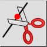

แบ่ง
แถบเครื่องมือ / ไอคอน:

เมนู:
แก้ไข > แบ่ง
ทางลัด:
D, I
คำสั่ง:
divide | di
คำอธิบาย
แบ่งเอนทิตีเป็นสองเอนทิตีที่แยกจากกัน
การใช้งาน
เลือกเอนทิตีที่คุณต้องการแบ่ง
กำหนดจุดแบ่งโดยใช้เมาส์ จุดแบ่งมักจะเป็นจุดตัดกับเอนทิตีอื่น เลือกโหมดสแนปจุดตัดเพื่อสแนปไปยังจุดตัดโดยอัตโนมัติ